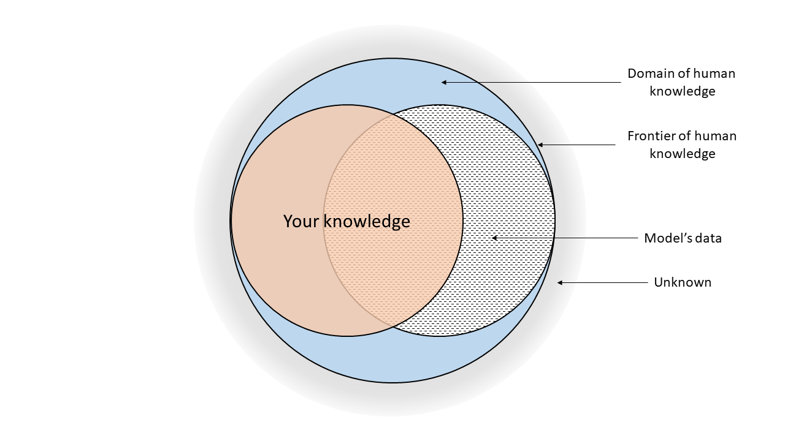

AI code assistants, like GitHub Copilot, are tools powered by advanced Large Language Models (LLMs). These models are trained on vast amounts of publicly available code and text.
How They Work (Simplified)
Think of them as incredibly sophisticated auto-completion engines. When you write code or a comment (a "prompt"), the AI analyzes this context and predicts what you might want to write next. This could be a single line, a whole function, or even a block of documentation.
Context is Key: They consider your current file, related open files, and the specific instructions you provide.
Pattern Recognition: They identify patterns from the code they were trained on to generate relevant suggestions.
Not Magic: They don't "understand" code like humans do. They generate statistically probable sequences of tokens based on their training.

Fig 1.1: Basic flow of information with an AI code assistant.